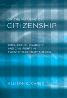

<body bgcolor="#FFFFFF" text="#000000" link="#0000FF" vlink="#CC0000" alink="#CC0000"><center><hr width="350" size="1" align="center" noshade>The history of civil rights for people with intellectual disabilities in 20th century America<hr width="350" size="1" align="center" noshade><p><a href="https://cdcshoppingcart.uchicago.edu/Cart/ChicagoBook.aspx?ISBN=9781592136971&&PRESS=temple" target="_top">Buy this book!</a> | <a href="https://cdcshoppingcart.uchicago.edu/Cart/Cart.aspx?PRESS=temple" target="_top">View Cart</a> | <a href="https://cdcshoppingcart.uchicago.edu/Cart/Cart.aspx?PRESS=temple" target="_top">Check Out</a></p><p></p></center><!--none//--><h1>On the Margins of Citizenship</h1>
<H2>Intellectual Disability and Civil Rights in Twentieth-Century America</H2>
<h3>Allison C. Carey</h3>
<P>cloth 1-59213-697-4 $65.50, Jul 09, <FONT COLOR=#990033>Available</FONT>
<br>paper 1-59213-698-2 $31.95, <FONT COLOR=#990033>Available</FONT>
<br>Electronic Book 1-59213-699-0 $31.95 <FONT COLOR=#990033>Available</FONT>
<BR> 286 pp
6x9
</P><h3 align="center"><P><font color="#996633">Scholarly Achievement Award, <i>North Central Sociological Association</i>,
2010</font></P>
</H3>
<BLOCKQUOTE><I>"On the Margins of Citizenship <I>is a remarkable book. It has a broad scope, impressively addressing the history of American twentieth-century intellectual disability empirically at the individual, community, and policy levels.</I>"<BR><B>&#151Richard Scotch</B>, Professor of Sociology and Public Policy, University of Texas at Dallas</I></BLOCKQUOTE>
<p><i>On the Margins of Citizenship</i> provides a comprehensive, sociological history of the fight for civil rights for people with intellectual disabilities. Allison Carey, who has been active in disability advocacy and politics her entire life, draws upon a broad range of historical and legal documents as well as the literature of citizenship studies to develop a �relational-practice� approach to the issues of intellectual disability and civil rights. She examines how and why parents, self-advocates, and professionals fought for different visions of rights for this population throughout the twentieth century and the changes that took place over that time.</p>
<p>Carey addresses the segregation of people with intellectual disabilities in schools and institutions, along with the controversies over forced sterilization, eugenics, marriage and procreation, and protection from the death penalty. She chronicles the rise of the parents� movement and the influence of the Kennedy family, as well as current debates that were generated by the impact of the 1990 Americans with Disabilities Act.</p>
<p>Presenting the shifting constitutional and legal restrictions for this marginalized group, Carey argues that policies tend to sustain an ambiguity that simultaneously promises rights yet also allows their retraction.</p>
<BR>&nbsp;<h2>Excerpt</h2><P>Excerpt available at <a href="http://www.temple.edu/tempress">www.temple.edu/tempress</a></p>
<BR>&nbsp;<h2>Reviews</h2>
<P><i>"</i>On the Margins of Citizenship<i> makes an important contribution to the sociology and American history of intellectual disability. It draws together and analyzes the development of legal rights that affect people with this disability. I am especially impressed with Carey's theoretical grounding. It is clear, succinct, and convincing. This is an excellent work that will prove to be important to scholars and activists interested in intellectual disability." </i><BR><B>&#151James Trent</B>, Professor of Sociology, Gordon College </P>
<p><i>"Carey carefully summarizes...the continuing problematic issues for people facing intellectual disabilities, while seeking inclusion by changing the definitions of citizenship.... Summing Up: Highly recommended." </i>
<br>&#151<b><i>CHOICE</i></b>
<p><i>"Carey succeeds in describing how rights for the intellectually disabled have been conceptualised in the USA. What could have been a dry legal history is made interesting by numerous case studies and Carey�s passionate, yet nuanced, approach to the issues at hand. Ultimately, this is a call to help those who struggle to fit into and succeed in a competitive, often ruthless, society reach their potential. If we are able to help them do so, we may also be living up to our potential as well." </i><br>&#151<b><i>The Social History of Medicine</i></b>
<p><i>"In addition to providing an excellent history of intellectual disability in modern America, Carey has given us a model of the questions we need to ask and the themes we need to trace in the ideological histories of all disabilities."</i><br>&#151<b><i>H-Disabilities</i></b>
<p><i>"[W]ritten in an engaging style with relevant and appropriate evidence and examples. It provides a competent argument for the need to change attitudes and challenge the perception of the status of people with intellectual disabilities in the legal system in America....[T]he message is emotive and convincing.... The book is very well researched."</i> <br>&#151<b><i>Contemporary Sociology</i></b>
<BR>&nbsp;<P><p>&nbsp;&nbsp;<font color="#3152A5">Also available in e-book</font></p></P><BR>&nbsp;<br>
<h2>Contents</h2><P>
<p>Acknowledgments
<br>1. Introduction
<br>2. A Theory of Rights and Disability
<br>3. Setting the Stage: Early Tensions in Citizenship
<br>4. The Feebleminded versus the Nation: 1900�1930s
<br>5. Professionals and the Potentially Productive Citizen
<br>6. The Rise of the Parents� Movement and the Special Child
<br>7. Creating the Mentally Retarded Citizen
<br>8. The Difficult Road of the 1980s
<br>9. Reimagining Retardation, Transforming Community
<br>10. Conclusion
<br>Notes
<br>References
<br>Index
</P><BR>&nbsp;<H2>About the Author(s)</H2>
<table><tr><td valign="top"><img src="/tempress/authors/1934_au1.gif" height="90" width="75"></td><td width="100%" valign="middle"><p><b>Allison C. Carey</b> is an Associate Professor in the Department of Sociology and Anthropology at Shippensburg University.</P></td></tr></table>
<BR><H2>Subject Categories</H2>
<p><A HREF="/tempress/disability.html" TARGET="_top">Disability Studies</a>
<BR><A HREF="/tempress/sociology.html" TARGET="_top">Sociology</a>
<BR><A HREF="/tempress/history.html" TARGET="_top">History</a>
</p>
<p align="center"><a href="https://cdcshoppingcart.uchicago.edu/Cart/ChicagoBook.aspx?ISBN=9781592136971&&PRESS=temple" target="_top">Buy this book!</a> | <a href="https://cdcshoppingcart.uchicago.edu/Cart/Cart.aspx?PRESS=temple" target="_top">View Cart</a> | <a href="https://cdcshoppingcart.uchicago.edu/Cart/Cart.aspx?PRESS=temple" target="_top">Check Out</a></p><p><font face="Arial" size="1"><a href="copyright.html" onMouseOver="window.status='Web Copyright Policy';return true;" onMouseOut="window.status=''" title="Web Copyright Policy">&copy;</a> 2015 <a href="http://www.temple.edu" target="new" onMouseOver="window.status='Link to Temple University home page';return true;" onMouseOut="window.status=''" title="Link to Temple University home page">Temple University</a>. All Rights Reserved. http://www.temple.edu/tempress/titles/1934_reg.html</font></p>